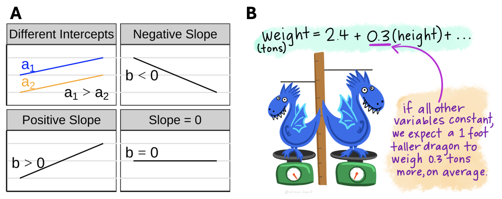
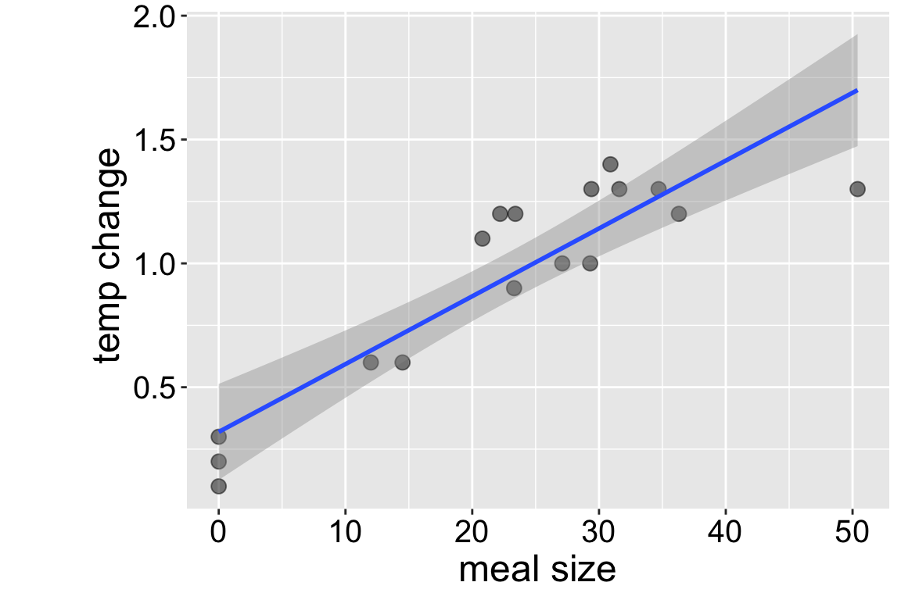
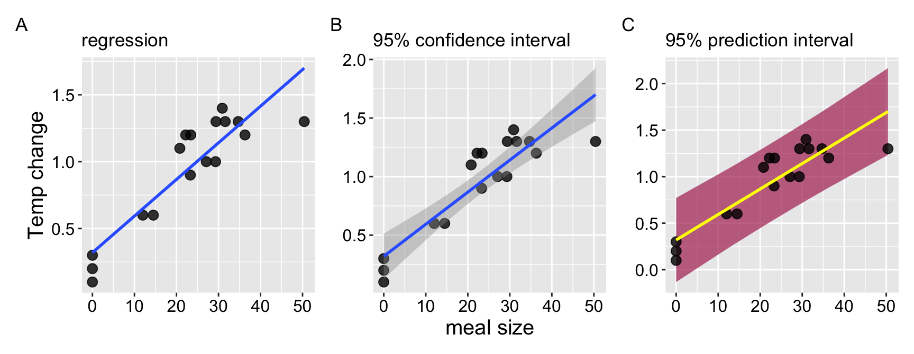
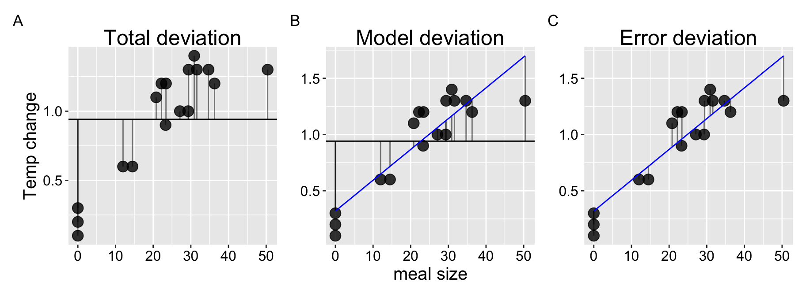
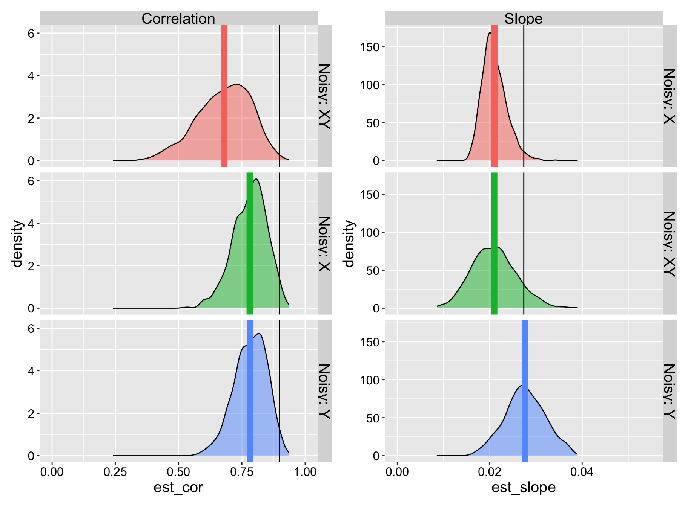
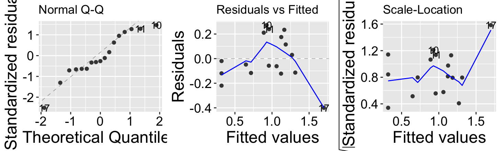
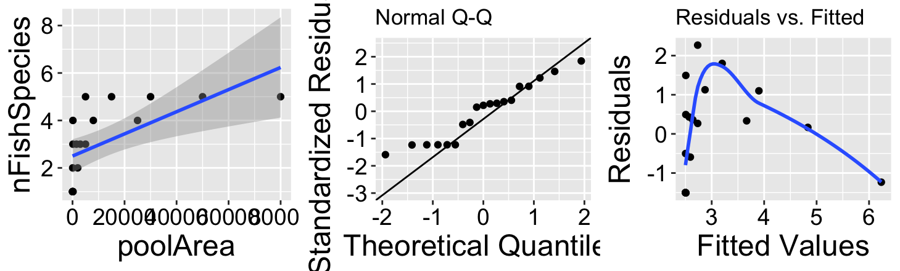
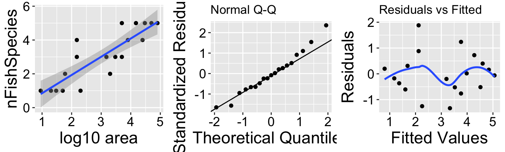
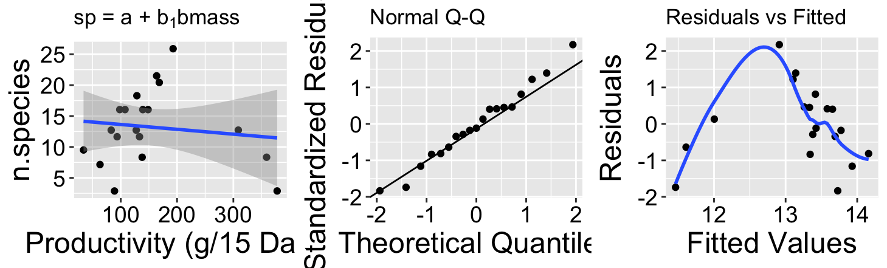
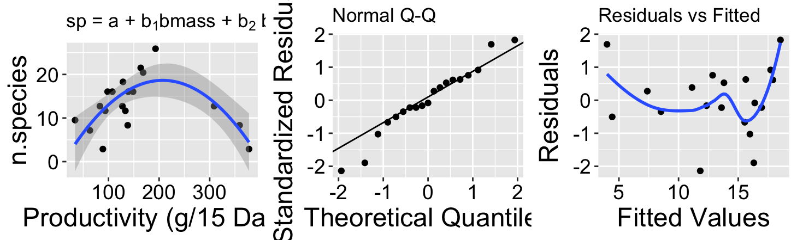

20. Linear Regression
Motivating scenarios: We are interested in predicting one continuous variable based on the value of another, and to estimate the uncertainty and significance of this prediction.
Learning goals: By the end of this chapter you should be able to
Use a regression equation to predict the value of a continuous response variable from a continuous explanatory variable.
Use equations to find the line of “best” fit.
Calculate t values for the slope, estimate uncertainty in them, and test the null hypothesis that this differs from zero.
Make a linear regression and analyze it with the
lm(),summary.lm(), andanova()functions in R.
Calculate sums of squares for a linear regression to calculate F and test the null hypothesis.
Recognize the assumptions and limitations of linear regression.
Review
Earlier we explored how to describe associations between continuous variables. Here we review that material and the integrate this into our linear model framework.
Review: Describing Associations
There are three common and closely related ways to describe the association between two continuous variables, ( x ) and ( y ): covariance, correlation, and slope.
Covariance describes how ( X ) and ( Y ) vary together across individuals: [ = ]
Correlation (( r )) describes the strength and reliability of the joint variation between ( X ) and ( Y ). It is the covariance divided by the product of the standard deviations of ( x ) and ( y ), ( s_x ) and ( s_y ), respectively: [ r = ]
Slope (( b )) indicates the amount by which ( Y ) changes for each unit increase in ( X ). It is the covariance divided by the variance of ( x ), ( s_x^2 ): [ b = ]
Review: Linear Models
As introduced previously, linear models predict one response variable from one or more explanatory variables.
[ = f(_i) ]
Naturally, observations do not perfectly match predictions. The residual, ( _i ), describes the difference between the observed value of the ( i^{} ) observation, ( Y_i ), and its predicted value, ( ).
[ _i = Y_i - ]
Linear models typically include an intercept (( a )) and an effect (( b )) of each explanatory variable (( x )) on the response. For t-tests and ANOVAs, the intercept represents the mean of the “reference category,” and the effect describes the difference between the mean of individuals in category ( j ) and the mean of the reference category. In a simple linear regression, ( b ) is the slope (as defined above), and ( x_i ) is the value of ( x ) for individual ( i ).
[ Y_i = a + b x_i + _i ]
Review: The regression as a linear model
For a simple linear regression with one explanatory and one response variable,
\[\begin{equation} \begin{split} Y_i &= a + b x_{i} \end{split} (\#eq:linreg) \end{equation}\]
Where
- \(a\) is the intercept,
- \(b\) is the slope, and
- \(X_i\) is the \(i^{th}\) individual’s observed value for the explanatory variable, \(X\)
In simple regression, the intercept can be found as
\[a = \bar{Y} - b \times \bar{X}\]
Review: Statistical evaluation of linear models.
Statistical analyses of linear models allow us to describe uncertainty in our estimates and conduct null hypothesis significance testing. Of course, we can also do this with bootstrapping and permuting as explored previously, however compared to permuting and bootstrapping, a linear model is nice because it is fast, you always get the same answers, and is based on an actual model.
Uncertainty in Linear Models
When working with real-world data, it almost always represents an estimate from a sample rather than a true population parameter. This means we can think of an estimate as a single sample drawn from the (unknown) population sampling distribution—the distribution of estimates we would obtain from repeated sampling of a population. However, since we only have one sample, we cannot know the true sampling distribution, but we can approximate it.
Bootstrapping (i.e., resampling observations with replacement): uses our data to approximate the sampling distribution.
- In bootstrapping, we describe uncertainty with the bootstrap standard error (the standard deviation of the bootstrap distribution) and the 95% bootstrap confidence interval—the values between the upper and lower 2.5% tails of our bootstrapped distribution.
The z and t distributions: provide mathematical approximations of a sampling distribution for normally distributed random variables. Both distributions consider our estimate in units of standard errors away from the center o its distribution. The t distribution is more applicable to real-world data because it incorporates uncertainty in the estimate of the standard deviation, in contrast to the z distribution, which assumes we know the true standard deviation. As sample sizes increase, these distributions become more similar because our estimate of the standard error improves.
- With the t and z distributions, we estimate the standard error through a mathematical formula and describe the 95% confidence interval as the mean ± the standard error multiplied by the critical value, which captures the upper and lower 2.5% of these distributions.
These are two approaches to estimating the same thing, so they usualy provide similar results.
NHST for a Linear Model
In linear models, we test the null hypothesis that ( y_i ) is independent of our predictors.
We can test the null by permutation: This involves randomly reassigning explanatory variables to response values and estimating our parameter under this random shuffling. Repeating this process multiple times approximates the sampling distribution under the null hypothesis of no association. We test the null by assessing the proportion of this null sampling distribution that is as extreme or more extreme than our observed estimate. If this proportion is low (typically less than 0.05), we reject the null hypothesis.
We can also test the null by using standard mathematical distributions like the ( Z ), ( t ), and ( F ) distributions: If our test statistic falls in the extreme tail (i.e., only 5% of the distribution is as or more extreme), we reject the null. Recall: - t and z distributions describe estimates of individual parameters in units of standard errors away from the null value of zero, and we consider both tails of these distributions. - F tests compare the variability explained by our model to the residual variation. Under the null, F equals one, and we examine only the upper tail when testing the null hypothesis.
Permutation tests and mathematical tests aim to achieve the same goal and, therefore, often yield similar results.
Assumptions of Linear Models
These methods offer benefits but come with assumptions—linear models rely on particular assumptions about the distribution of residuals. In addition to standard assumptions of independence and unbiased sampling, single-factor linear models assume:
- Residuals are normally distributed.
- Residuals are independent of the predicted values.
- Variance in residuals is independent of the predicted values.
When these assumptions are not met, other approaches (e.g., permutation and bootstrapping methods, models that better account for residual patterns, nonparametric models, etc.) are more appropriate. However, the magic of the central limit theorem means that most linear models are fairly robust to modest violations of these assumptions.
Linear regression example:
The dataset
How do snakes heat up when they eat? To find out, Tattersall et al. (2004) noted the temperature of snakes as a function of their prey size (Fig. @ref(fig:snakeregression)).
The prey size of the \(X\) axis of Figure @ref(fig:snakeregression)C is in units of percent of a snake’s body weight, and the temperature on the Y axis of Figure @ref(fig:snakeregression)C, is the degrees Celcius increase in a snake’s body temperature two days after eating.

A quick summary of the associtations.
A quick data summary shows a very tight correlation – temp change is reliably associated with meal size (r = 0.899). We interpret our slop to mean that in this study, a snakes temperature increases, on average, by 0.0274 degrees Celsius for every increase in meal size (measured as percent of a snake’s mass) in addition to the baseline increase in temperature of 0.32 degrees Celsius, on average, that all snakes experienced, regardless of their meal size.
snake_data <- read_csv("https://whitlockschluter3e.zoology.ubc.ca/Data/chapter17/chap17q11RattlesnakeDigestion.csv")%>%
rename(meal_size = mealSize, body_temp = tempChange)
snake_data %>%
summarise(n = n(),
snake_cov = cov(meal_size, body_temp),
snake_cor = cor(meal_size, body_temp),
snake_slope = snake_cov /var(meal_size),
snake_intercept = mean(body_temp) - snake_slope * mean(meal_size)) # A tibble: 1 × 5
n snake_cov snake_cor snake_slope snake_intercept
<int> <dbl> <dbl> <dbl> <dbl>
1 17 5.28 0.899 0.0274 0.320A linear regression in R.
We can easily build a linear model in R with the lm() function.
snake_regression <- lm(body_temp ~ meal_size, data = snake_data)
coef(snake_regression)(Intercept) meal_size
0.31955925 0.02738402 Uncertainty in parameter estimates
Bootstrap based uncertainty
As described above, we can approximate the sampling distirbuiont by bootsrapping. Here we can visualize the uncertainty:
snake_boot <- replicate(1000, simplify = FALSE,
slice_sample(snake_data, prop=1, replace = TRUE) %>%
lm(body_temp ~ meal_size, data = .)%>%
coef()) %>%
bind_rows()
We can also generate traditional summaries of uncertainty
snake_boot%>%
summarise(SE_slope = sd(meal_size),
lower_CI_slope = quantile(meal_size, prob = 0.025),
upper_CI_slope = quantile(meal_size, prob = 0.975),
SE_intercept = sd(`(Intercept)`),
lower_CI_intercept = quantile(`(Intercept)`, prob = 0.025),
upper_CI_intercept = quantile(`(Intercept)`, prob = 0.975)) | term | SE | lower_CI | upper_CI |
|---|---|---|---|
| intercept | 0.1061 | 0.1744 | 0.5714 |
| slope | 0.0047 | 0.0183 | 0.0360 |
Math-based uncertainty and NHST.
Math-based uncertainty and NHST for the slope
Alternatively we can estimate the standard error in the slope mathematically, which may be preferable for this modest sample size, following equation @ref(eq:seb):
\[\begin{equation} \begin{split} SE_b &= \sqrt{\frac{\text{MS}_\text{resid}}{\sum(X_i-\overline{X})^2}} = \sqrt{\frac{\Sigma(\epsilon_i^2) / \text{df}_{b}}{\sum(X_i-\overline{X})^2}} = \sqrt{\frac{\sum(Y_i-\widehat{Y_i})^2 / (n-2) }{\sum(X_i-\overline{X})^2}} \\ \end{split} (\#eq:seb) \end{equation}\]
Where \(\text{df}_b\) is the degrees of freedom for the slope, which equals the sample size minus two (one for the slope, and one for the intercept).
Equation @ref(eq:seb) might look, at first blush, a bit different than most equations for the standard error we’ve seen before, but it actually is pretty familiar. The numerator i the difference between an observations and its mean value (conditional, on X, which is a good way to think of \(\widehat{Y_i}\)) divided by the degrees of freedom, which is basically the sample variance in the residuals. We estimate the standard error of the slope by taking the square root of this variance, after dividing through by the sum of square in our predictor X.
We can calculate this in R using the augment() function from the broom package. While we’re at it,
- We can include 95% confidence intervals in the standard way—by adding and subtracting the product of the standard error and our critical t-value from the estimate.
- We can also calculate a p-value – testing the null of a slope of zero, by calculating t and looking this up from the t-distribution.
snake_math_uncertainty_slope <- augment(snake_regression) %>%
summarise(df_slope = n() -2,
numer = sum(.resid^2)/(df_slope),
denom = sum((meal_size-mean(meal_size))^2 ),
estimate = coef(snake_regression)[["meal_size"]],
se_slope = sqrt(numer/denom),
t_slope = estimate / se_slope,
t_crit = qt(0.025,df= df_slope, lower.tail = FALSE),
lower_CI = estimate - se_slope * t_crit,
upper_CI = estimate + se_slope * t_crit,
p_slope = 2 * pt(q = t_slope , df = df_slope, lower.tail = FALSE)) %>%
select(df_slope, se_slope, estimate, lower_CI, upper_CI, p_slope)| df_slope | se_slope | estimate | lower_CI | upper_CI | p_value |
|---|---|---|---|---|---|
| 15 | 0.0034 | 0.0274 | 0.02 | 0.0347 | 9.381e-07 |
From these results, we observe:
- Uncertainty estimates comparable to those achieved through bootstrapping.
- An extremely low p-value, indicating a very strong association that would be highly unlikely if there were no actual association. Given how low this p-value is, and because I’ve dithered enough, I won’t generate a permutation-based p-value (which would also likely be close to zero).
Math-based uncertainty and NHST for the intercept
We can similarly find the standard error for the intercept. Calculating the intercept’s uncertainty requires accounting for the overall spread of our predictor values, which may be especially useful when (X) values are far from zero.
[ \[\begin{split} SE_{\text{intercept}} &= \sqrt{\frac{\text{MS}_\text{resid}}{n} + \frac{\overline{X}^2 \, \text{MS}_\text{resid}}{\sum (X_i - \overline{X})^2}} \\ \end{split}\](#eq:sei) ]
Here, () (residual mean square) comes from dividing the sum of squared residuals by the degrees of freedom for error, which is (n-2). This equation for (SE{}) might look a bit different, but it’s quite intuitive. The term () represents baseline variance around zero, while () adjusts for any offset in (), accounting for how spread in (X) increases uncertainty in the intercept.
We can calculate this in R using augment() from the broom package. While we’re at it, lets Include a 95% confidence interval by adding and subtracting the product of the standard error and critical t-value. But we wont calculate a p-value for the intercept. The null hypothesis of an intercept of zero is not particularly interesting in this case.
snake_math_uncertainty_intercept <- augment(snake_regression) %>%
summarise(df_intercept = n() - 2,
mean_X = mean(meal_size),
MS_resid = sum(.resid^2) / df_intercept,
estimate_intercept = coef(snake_regression)[["(Intercept)"]],
se_intercept = sqrt((MS_resid / n()) +
(mean_X^2 * MS_resid / sum((meal_size - mean_X)^2))),
t_intercept = estimate_intercept / se_intercept,
t_crit = qt(0.025, df = df_intercept, lower.tail = FALSE),
lower_CI_intercept = estimate_intercept - se_intercept * t_crit,
upper_CI_intercept = estimate_intercept + se_intercept * t_crit) %>%
select(df_intercept, se_intercept, estimate_intercept, lower_CI_intercept, upper_CI_intercept)| df_intercept | se_intercept | estimate_intercept | lower_CI_intercept | upper_CI_intercept |
|---|---|---|---|---|
| 15 | 0.091 | 0.3196 | 0.1256 | 0.5135 |
Again, results resmble our esimtated uncertainty from the bootstrap distribution.
R-based uncertainty and NHST.
We can use the also use the [confint()](https://stat.ethz.ch/R-manual/R-devel/library/stats/html/confint.html) function to find 95% confidence intervals in R as follows.
confint(snake_regression, level = 0.95) 2.5 % 97.5 %
(Intercept) 0.12564557 0.51347293
meal_size 0.02003708 0.03473096We can test the null and get standard errors with the summary() function or the tidy() function from the broom package to extract this information from our linear model. Here I just show the output from summary().
summary(snake_regression)
Call:
lm(formula = body_temp ~ meal_size, data = snake_data)
Residuals:
Min 1Q Median 3Q Max
-0.39971 -0.11663 -0.04817 0.17535 0.27252
Coefficients:
Estimate Std. Error t value Pr(>|t|)
(Intercept) 0.319559 0.090977 3.513 0.00314 **
meal_size 0.027384 0.003447 7.944 0.000000938 ***
---
Signif. codes: 0 '***' 0.001 '**' 0.01 '*' 0.05 '.' 0.1 ' ' 1
Residual standard error: 0.1914 on 15 degrees of freedom
Multiple R-squared: 0.808, Adjusted R-squared: 0.7952
F-statistic: 63.11 on 1 and 15 DF, p-value: 0.0000009381Uncertainty in predictions
We think of the line of a regression as “Predicting” the value of the response variable, given the value of the explanatory variable, \(\widehat{Y_i}\). What does this mean? Well it’s our estimate of the prediction for the population mean value of Y, given it had this value of X Figure @ref(fig:predictionregression)A.
We can acknowledge the uncertainty in this prediction by including a standard error on our regression line as in Figure @ref(fig:predictionregression)B.
But this is a prediction for the expected mean \(\widehat{Y_i}\), we might want bands to predict the range of 95% of observations. This is called the prediction interval and is presented in maroon in Figure @ref(fig:predictionregression)C. We can get this prediction interval with the predict().
snake_regression %>%
predict(interval = "predict")Warning in predict.lm(., interval = "predict"): predictions on current data refer to _future_ responsesWe can visualize these different summaries of uncertainty.

No need to know the equations underlying these – just know (1) they exist, (2) they are different (3) The prediction interval is always wider than the confidence interval (4) the different goals of each
Linear Regression as ANOVA

We can view a linear regression as an ANOVA, where we partition variance as we have in the ANOVA. The concepts remain the same: (SS_{total}) represents the distance between observations and the mean, (SS_{model}) represents the distance between predictions and the mean, and (SS_{error}) represents the distance between observations and predictions. However, the mathematical notation differs slightly. Here, we have:
- (SS_{total} = (Y_i - )^2)
- (SS_{model} = ( - )^2)
- (SS_{error} = (Y_i - )^2)
- (MS_{model} = SS_{model} / df_{model})
- (MS_{error} = SS_{error} / df_{error})
- (df_{model} = 1)
- (df_{error} = n - 2)
- (F = )
augment(snake_regression) %>%
summarise(ss_total = sum((body_temp - mean(body_temp))^2),
ss_model = sum((.fitted - mean(body_temp))^2),
ss_error = sum((body_temp - .fitted)^2),
r2 = ss_model / ss_total,
#
df_model = 1,
df_error = n() - 2,
#
ms_model = ss_model / df_model,
ms_error = ss_error / df_error,
F_val = ms_model / ms_error,
p_value = pf(F_val, df1 = df_model, df2 = df_error, lower.tail = FALSE)) %>%
dplyr::select(-df_model, -df_error) %>%
mutate(p_value = paste(round(p_value * 10^7, digits = 1), "x10^-7", sep = "")) %>%
kable(digits = 4)| ss_total | ss_model | ss_error | r2 | ms_model | ms_error | F_val | p_value |
|---|---|---|---|---|---|---|---|
| 2.8612 | 2.3118 | 0.5494 | 0.808 | 2.3118 | 0.0366 | 63.1148 | 9.4x10^-7 |
Or use the anova function:
anova(snake_regression)Analysis of Variance Table
Response: body_temp
Df Sum Sq Mean Sq F value Pr(>F)
meal_size 1 2.31176 2.31176 63.115 0.0000009381 ***
Residuals 15 0.54942 0.03663
---
Signif. codes: 0 '***' 0.001 '**' 0.01 '*' 0.05 '.' 0.1 ' ' 1The Squared Correlation and Proportion of Variance Explained
We previously referred to (r^2 = ) as the “proportion of variance explained.” In this example, we find (r^2 = = 0.808). Note also that the correlation, (r), squared equals \(r^2\). In this case the correlation equals 0.8989, and (0.8989^2 = 0.808). So, we can calculate the proportion of variance explained either as (r^2 = ) or as (r^2 = ()^2); they are equivalent!
Caveats and considerations for linear regression
Linear regression is a super useful tool. So it’s important to recognize its limitations before gettting carried away!!!
Effect of Measurement Error on Estimated Slopes
We rarely measure all values of (X) and (Y) perfectly. How does measurement error in (X) and/or (Y) affect our estimated correlations and slopes?
For correlation, measurement error in (X) and/or (Y) both increases the variance of residuals and biases the correlation closer to zero, pulling it away from its true value.
For the slope, measurement error in (X) increases the variance of residuals and similarly biases the slope closer to zero, moving it away from its true value.
For the slope, measurement error in (Y) does not systematically increase or decrease the slope estimate. However, it tends to increase the standard error, the residual variance, and the p-value.
Demonstrating Attenuation
Let’s see attenuation in action with a simulation! We’ll start with our snake dataset, where the actual slope is approximately round(coef(snake_regression)[2], digits = 4), and treat this as our “true” population slope.
Using the jitter() function, we’ll add:
- Random noise in (X) (
meal_size). - Random noise in (Y) (
body_temp). - Random noise in both (X) and (Y).
We’ll then compare these noisy estimates to the true slope and intercept values. Specifically, we’ll add random noise equal to one standard deviation to (X), (Y), or both, estimate the slope and correlation each time, and repeat this simulation many times.
n_reps <- 1000
# Simulate noisy data for X, estimate slope and correlation
noisy_x <- replicate(n_reps, simplify = FALSE,
expr = snake_data %>% mutate(meal_size = jitter(meal_size, amount = sd(meal_size))) %>%
summarise(est_slope = cov(meal_size, body_temp) / var(meal_size),
est_cor = cor(meal_size, body_temp))) %>% bind_rows() %>%mutate(noisy = "Noisy: X")
# Simulate noisy data for Y, estimate slope and correlation
noisy_y <- replicate(n_reps, simplify = FALSE,
expr = snake_data %>% mutate(body_temp = jitter(body_temp, amount = sd(body_temp))) %>%
summarise(est_slope = cov(meal_size, body_temp) / var(meal_size), est_cor = cor(meal_size, body_temp))) %>%
bind_rows() %>% mutate(noisy = "Noisy: Y")
# Simulate noisy data for both X and Y, estimate slope and correlation
noisy_xy <- replicate(n_reps, simplify = FALSE,
expr = snake_data %>%
mutate(meal_size = jitter(meal_size, amount = sd(meal_size)),
body_temp = jitter(body_temp, amount = sd(body_temp))) %>%
summarise(est_slope = cov(meal_size, body_temp) / var(meal_size),
est_cor = cor(meal_size, body_temp))) %>%bind_rows() %>% mutate(noisy = "Noisy: XY")
Be Wary of Extrapolation
Det er vanskeligt at spaa, især naar det gælder Fremtiden.
It is difficult to predict, especially when it comes to the future.
This quote nicely captures the central challenge in regression. Its power is evident from how often it’s been incorrectly attributed to famous thinkers (e.g., Niels Bohr, Yogi Berra, Mark Twain, and even Nostradamus). This is an example of how “famous things that are said… tend to be attributed to even more famous people,” as Grant Barrett discusses in the Under Understood episode The Origins of Oranges and Door Hinges.
It is difficult to predict from a linear regression, especially when it comes to data outside the model’s range.
In addition to the usual cautions about uncertainty, bias, nonindependence, and model assumptions, predictions from a linear model are only reliable within the range of the explanatory variable used to build the model.

Example of Extrapolation Risks
Species-Area Relationship: How does the number of fish species change with pool area? Data for small pools from Kodric-Brown & Brown (1993) are shown in Figure @ref(fig:dontextrap)A, where we fit a linear model:
[ = 1.79 + 3.55 ^{-4} ^2 ]
Extrapolating this model to predict species in a 50,000 (m^2) pool, we estimate about 20 fish species (Figure @ref(fig:dontextrap)B). However, additional data shows this is a poor prediction for larger pools (Figure @ref(fig:dontextrap)C).
- The number of fish species is poorly predicted by linear extrapolation based on small pools.
- The model built from small pools does not predict well for larger pools.
- Lesson: Avoid extrapolation—predictions are only reliable within the range of (X) values used in the model.
Assumptions of Linear Regression and Addressing Violations
Assumptions of Linear Regression
Recall from Section @ref(linmodasum), a linear model assumes:
- Linearity: Observations are appropriately modeled by adding all predictors in our equation. We evaluate this by ensuring residuals are independent of predictors.
- Homoscedasticity: The variance of residuals is constant across all predicted values, \(\hat{Y_i}\), for any value of X.
- Independence: Observations are independent of one another (aside from the predictors in the model).
- Normality: Residuals are normally distributed.
- Unbiased Data Collection: Data is collected without bias, as usual.
We can assess assumptions, such as normality of residuals and independence of predicted values, \(\widehat{Y_i}\), and residuals, \(e_i\), using the autoplot() function in the ggfortify package.
library(ggfortify)
autoplot(snake_regression, which = c(2,1,3), ncol = 3)
Figure @ref(fig:diaglinreg) shows that the assumptions appear to be met, with the caveat that the observed value of the largest prediction, \(Y_{17} = 1.3\), is substantially smaller than its predicted value, \(\widehat{Y_{17}} = 1.70\).
When Assumptions Aren’t Met
If assumptions are violated, several options are available:
- Ignore minor violations if they don’t substantially affect results.
- Use nonparametric approaches - For instance, we can rank values of x and y, compute a correlation of these ranks, and assess how unusual this correlation is under a null sampling distribution. This approach is known as “Spearman’s Rank correlation”.
- Apply a transformation to the data.
- Build a better-fitting model.
Transformation Example
When data violate test assumptions, an appropriate transformation not only meets the assumptions but often reveals a more meaningful model and natural scale.
For example, returning to the full data from Kodric-Brown & Brown (1993) on the association between pond size and species diversity:

The raw data plot (Figure @ref(fig:fullfpooldatlin)A) shows a strong association between pool area and the number of fish species, with a substantial amount of variance explained (0.39), but diagnostics reveal that small values are too large and large values are too small (Figure @ref(fig:fullfpooldatlin)B,C).

Transforming the x-axis with \(log_{10}\) (Figure @ref(fig:fullfpooldatlog10)A) strengthens the association between \(log_{10}\) pool area and the number of fish species, nearly doubling the variance explained (\(r^2 = 0.74\)). Besides better meeting test assumptions (Figure @ref(fig:fullfpooldatlin)B,C), this transformation represents a more natural model scale.
Polynomial Regression Example
Violating assumptions often suggests the model might be biologically inappropriate. An example is predicting species number from plot productivity.

The raw data plot (Figure @ref(fig:bmasslin)A) shows little association between productivity and species count, with minimal variance explained (\(r^2 = 0.015\)). Diagnostics indicate normal residuals (Figure @ref(fig:bmasslin)B), but intermediate values have high positive residuals (Figure @ref(fig:bmasslin)C).

A polynomial regression (Figure @ref(fig:bmasspoly)A) reveals a clear, strong association between productivity and species diversity, where diversity peaks at intermediate productivity. This model significantly increases the variance explained in species diversity (\(r^2 = 0.5316\)), meeting test assumptions better and offering a more natural model. We will revisit polynomial regression later!
Quiz
Definitions, Notation, and Equations
Linear Regression: A statistical approach for modeling the relationship between a continuous response variable (Y) and one or more continuous explanatory variables (X), where we predict (Y) based on (X) and assess the strength, uncertainty, and significance of this prediction.
**Mean Squares Model ((_{model}))**: The average squared deviation between predicted values () (fitted by the regression model) and the overall mean (). This term reflects the variation explained by the model.
**Mean Squares Error ((_{error}))**: The average squared deviation of each observed (Y_i) from its predicted value (). This term reflects the residual (or unexplained) variance within the data.
F-statistic for Regression: A ratio of the variance explained by the model to the residual variance, calculated as (). A larger (F) value indicates a stronger model fit relative to the residual error.
Null Hypothesis for Regression (H₀): The hypothesis that the slope is zero, meaning there is no significant association between (X) and (Y).
Alternative Hypothesis for Regression (H₁): The hypothesis that the slope differs from zero, indicating a significant association between (X) and (Y).
Degrees of Freedom in Regression: For simple linear regression, we use (df_{model} = 1) (for the slope) and (df_{error} = n - 2) (total observations minus two for the slope and intercept).R Functions for Regression
Regression and Model Functions
lm(): Fits a linear regression model, estimating the intercept and slope.
anova(): Provides an ANOVA table for a linear model, which includes sums of squares, mean squares, and the F-statistic to assess model fit.
summary(): Summarizes the regression model, displaying coefficients, standard errors, t-values, p-values, R-squared, and F-statistic.
coef(): Extracts the estimated coefficients (intercept and slope) from a linear model object.
predict(): Generates predictions from a fitted model, either for the original data or new data. Can also calculate confidence and prediction intervals.
Functions from the broom Package
augment(): Adds columns to the original dataset containing fitted values, residuals, and additional diagnostics. Useful for examining the model fit for each observation.
tidy(): Summarizes model output in a tidy format, displaying coefficients, standard errors, t-statistics, and p-values in a data frame.
glance(): Returns a single-row summary of the model, including statistics such as R-squared, adjusted R-squared, AIC, BIC, and F-statistic. This function is useful for an overall model assessment.
Diagnostics and Visualization
autoplot(): Generates diagnostic plots for a linear model, including residuals vs. fitted values, normal Q-Q plots, scale-location plots, and residuals vs. leverage. This helps assess model assumptions such as normality, homoscedasticity, and leverage points in a straightforward and visual way.
Key Equations
- Regression Equation
[ Y_i = a + b X_i + _i ] where:- (a) is the intercept, representing the expected value of (Y) when (X = 0),
- (b) is the slope, indicating the change in (Y) for a one-unit increase in (X),
- (_i) is the residual error for observation (i).
- Estimating the Slope
The slope (b) is calculated as: [ b = ] where:- (X_i) and (Y_i) are the values of each observation,
- () and () are the means of (X) and (Y).
- Estimating the Intercept
The intercept (a) is calculated as: [ a = - b ] where:- (b) is the estimated slope,
- () and () are the means of (Y) and (X).
- Standard Error of the Slope
The standard error of the slope, (SE_b), is given by: [ SE_b = ] where:- (_{error}) is the mean squared error from the model.
- Standard Error of the Intercept
The standard error of the intercept, (SE_a), is calculated as: [ SE_a = ] where:- (n) is the number of observations,
- () is the mean of (X),
- (_{error}) is the mean squared error.